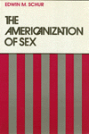

|
| Abraham Went Out
A Biography of A. J. Muste
Robinson, Jo Ann Ooiman
New in Paperback!
336 pp • Fall 1982
paper 0-87722-521-4
EAN 978-0-87722-521-8
|
| 
| The
Americanization of Sex
Schur, Edwin M.
Combining sociological, feminist, and Marxist perspectives to examine
the specific features of American life that shape our sexual outlooks
and behaviors
248 pp • Spring 1988
cloth 0-87722-521-4
EAN 978-0-87722-521-8
|
| 
|
Animal
Sacrifices
Religious Perspectives on the Use of Animals in Science
Regan, Tom, ed. and John Bowker
Presents the teachings of the major religions of the world concerning
animals and their use in science
New in Paperback!
288 pp • Spring 1986
paper 0-87722-511-7
EAN 978-0-87722-511-9
|
| |
Art and Labor
Ruskin, Morris, and the Craftsman Ideal
in America
Boris, Eileen
New in Paperback!
288 pp • Spring 1986
paper 0-87722-563-X
EAN 978-0-87722-563-8
|
|
|
The
Boss
J. Edgar Hoover and the Great American Inquisition
Theoharis, Athan G., and John Stuart Cox
The definitive biography of J. Edgar Hoover with unprecedented
accuracy and comprehensive evidence
504 pp • Spring 1988
cloth 0-87722-532-X
EAN 978-0-87722-532-4
|
|
|
Brains
and People
An Essay on Mentality and Its Causal Conditions
Robinson, William S.
An original contribution to contemporary, analytic philosophy of
mind
248 pp • Spring 1988
cloth 0-87722-548-6
EAN 978-0-87722-548-5
|
| 
|
Chaos
on the Shop Floor
A Worker's View of Quality, Productivity, and Management
Juravich, Tom
New in Paperback!
160 pp • Spring 1985
paper 0-87722-561-3
EAN 978-0-87722-561-4
|
| |
The Common Life
Ambiguity, Agreement, and the Structure
of Morals
Zwiebach, Burton
Focuses on the construction and justification of three principles:
freedom, equality, and civility
232 pp • Spring 1988
cloth 0-87722-530-3
EAN 978-0-87722-530-0
|
|
|
The
Crisis of Growth Politics
Cleveland, Kucinich, and the Challenge of Urban Populism
Swanstrom, Todd
Breaks new ground in the study of community power
New in Paperback!
328 pp • Spring 1985
paper 0-87722-562-1
EAN 978-0-87722-562-1
|
| 
|
Echoes
from the Holocaust
Philosophical Reflections on a Dark Time
Rosenberg, Alan, and Gerald E. Myers, eds.
The first book to focus comprehensively on the profound issues
and philosophical significance of the Holocaust
472 pp • Spring 1988
cloth 0-87722-539-7
EAN 978-0-87722-539-3
|
|
|
The
Fragile Bridge
Paterson Silk Strike, 1913
Golin, Steve
A full-length study of the creative collaboration between workers
and activists in the 1913 Paterson silk strike
328 pp • 6x9 • Spring 1988
cloth 0-87722-534-6
EAN 978-0-87722-534-8
|
| |
Group Health Association
A Portrait of a Health Maintenance Organization
Berkowitz, Edward D. and Wendy Wolff
Tracing the development of one of the nation's oldest and most
influential HMOs
240 pp • 6x9 • Spring 1988
cloth 0-87722-552-4
EAN 978-0-87722-552-2
|
|
|
Harvey
and Jessie
A Couple of Radicals
O’Connor, Jessie Lloyd, Harvey O’Connor, and Susan M. Bowler
An engaging memoir records the lives of two journalists chronicles
twentieth-century American radicalism
278 pp • Spring 1988
cloth 0-87722-519-2
EAN 978-0-87722-519-5
|
|
|
Issei,
Nisei, War Bride
Three Generations of Japanese American Women in Domestic Service
Glenn, Evelyn Nakano
A unique study of Japanese American women employed as domestic
workers
New in Paperback!
290 pp • 5.5x8.25 • Spring 1986
paper 0-87722-564-8
EAN 978-0-87722-564-5
|
|
|
Making
Time
Ethnographies of High-Technology Organizations
Dubinskas, Frank A., ed.
Four ethnographic studies of the social and cultural construction
of time
238 pp • Spring 1988
cloth 0-87722-535-4
EAN 978-0-87722-535-5
|
|
|
Measuring
the Efficiency of Public Programs
Costs and Benefits in Vocational Rehabilitation
Berkowitz, Monroe, ed.
Methods of evaluating the efficiency of public programs through
a consideration of one program, Vocational Rehabilitation
256 pp • Spring 1988
cloth 0-87722-527-3
EAN 978-0-87722-527-0
|
|
|
A
New Housing Policy for America
Recapturing the American Dream
Schwartz, David C., Richard C. Ferlauto, Daniel N. Hoffman, and Bill
Bradley
A comprehensive, innovative, and largely self-financing plan to
meet America’s housing needs in the 1990s
288 pp • Spring 1988
paper 0-87722-568-0
EAN 978-0-87722-568-3
cloth 0-87722-567-2
EAN 978-0-87722-567-6
|
| |
Paupers and Poor Relief in New York City and Its
Rural Environs, 1700-1830
Cray, Robert E., Jr.
The first comarative approach to poverty and poor relief in early
America
288 pp • Spring 1988
cloth 0-87722-542-7
EAN 978-0-87722-542-3
|
|
|
Philosophy
Goes to School
Lipman, Matthew
Lipman examines the impact his program has had and may yet have
on the process of education in philosophy
250 pp • Spring 1988
paper 0-87722-555-9
EAN 978-0-87722-555-3
cloth 0-87722-537-0
EAN 978-0-87722-537-9
|
|
|
Pluralism,
Corporatism, and Confucianism
Political Association and Conflict Regulation in the United States,
Europe, and Taiwan
Zeigler, Harmon
Defining substantial differences between individualist and collectivist
societies
272 pp • Spring 1988
cloth 0-87722-529-X
EAN 978-0-87722-529-4
|
|
|
The
Regulation of Sexuality
Experiences of Family Planning Workers
Joffe, Carole
New in Paperback!
208 pp • Fall 1987
paper 0-87722-510-9
EAN 978-0-87722-510-2
|
|
Remaking
the Welfare State
Retrenchment and Social Policy in America and Europe
Brown, Michael K., ed.
A collection of essays explores the origins and consequences of
retrenchment in European and American welfare states
320 pp • Spring 1988
cloth 0-87722-541-9
EAN 978-0-87722-541-6
|
|
|
Rethinking
Rental Housing
Gilderbloom, John I., Richard P. Appelbaum, and Joe R. Feagin
Challenges conventional assumptions concerning the operation of
housing markets
New in Paperback!
296 pp • Fall 1987
paper 0-87722-538-9
EAN 978-0-87722-538-6
|
|
|
Revelation
in Religious Belief
Mavrodes, George I.
A philosophical exploration of three models of the concept of divine
revelation
168 pp • Spring 1988
cloth 0-87722-545-1
EAN 978-0-87722-545-4
|
| 
|
Revising
State Theory
Essays in Politics and Postindustrialism
Block, Fred
An analysis of the relationship between business and the state
New in Paperback!
256 pp • Fall 1987
paper 0-87722-524-9
EAN 978-0-87722-524-9
|
|
|
A
Revolution of the Heart
Essays on the Catholic Worker
Coy, Patrick G., ed. and Jim Douglass
Analyzing the significance of the experiment of voluntary poverty,
gospel nonviolence, and solidarity with the poor
408 pp • Spring 1988
cloth 0-87722-531-1
EAN 978-0-87722-531-7
|
|
|
Toward
the Modern Economy
Early Industry in Europe, 1500-1800
Gutmann, Myron P.
A social history of the pre-industrial revolution in early modern
Europe
280 pp • Spring 1988
cloth 0-87722-547-8
EAN 978-0-87722-547-8
|
| 
|
The
Unity of Mistakes
A Phenomenological Interpretation of Medical Work
Paget, Marianne A.
Explores the subjective experience of physicians who inevitably
make mistakes
206 pp • Spring 1988
cloth 0-87722-533-8
EAN 978-0-87722-533-1
|
|
|
William
Henry Jackson and the Transformation of the American Landscape
Hales, Peter Beacon
An examination of the work of "the world's most famous landscape
photographer"
368 pp • 11x8.5 • Spring 1988
cloth 0-87722-478-1
EAN 978-0-87722-478-5
|
|
Women
and the Politics of Empowerment
Bookman, Ann and Sandra Morgen, eds.
Case studies of community and workplace organizing that redefine
our notions of "the political"
New in Paperback!
352 pp • Spring 1987
paper 0-87722-525-7
EAN 978-0-87722-525-6
|
| 
|
Work
on the Waterfront
Worker Power than Technological Change in a West Coast Port
Finlay, William
Ethnographic account of how longshoremen in California have been
affected by recent technological changes in the industry
224 pp • Spring 1988
cloth 0-87722-523-0
EAN 978-0-87722-523-2
|
|
|
Work
Without End
Abandoning Shorter Hours for the Right to Work
Hunnicutt, Benjamin Kline
Tracing the political, intellectual, and social dialogues that
changed the American concept of progress in terms of labor
416 pp • Spring 1988
cloth 0-87722-520-6
EAN 978-0-87722-520-1
|